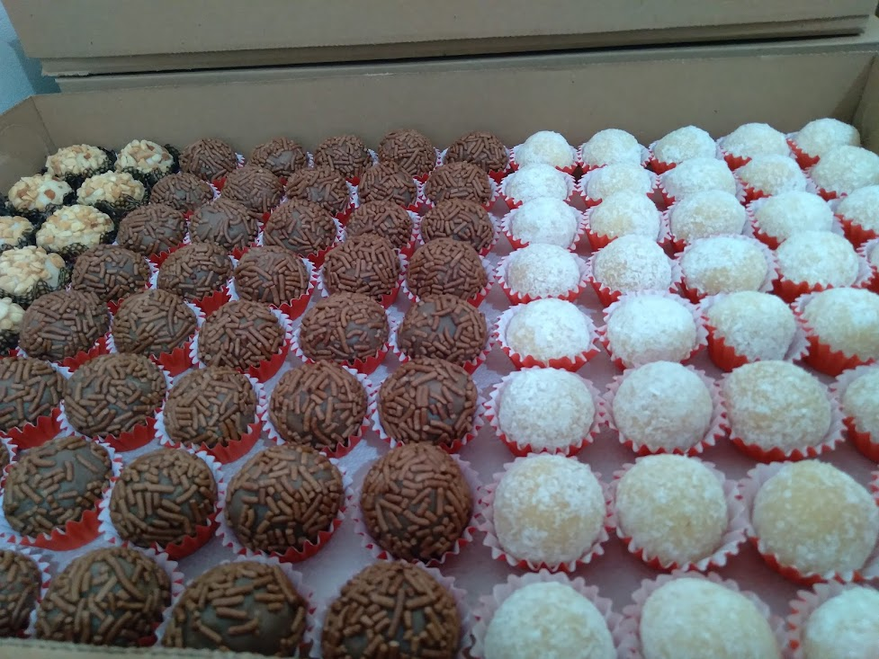
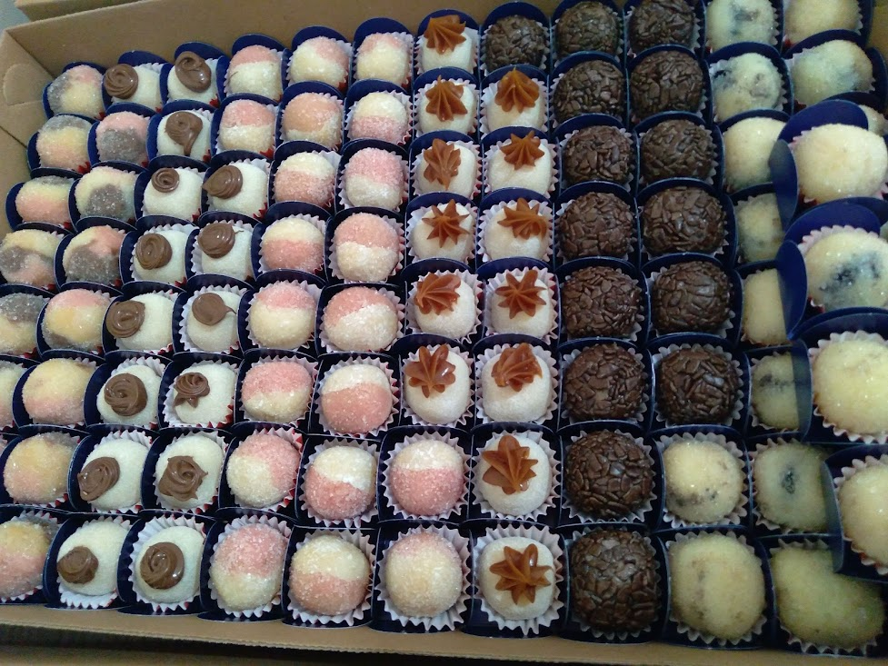

Felicidade é poder comer um docinho depois do almoço. A vida é muito curta para não comer brigadeiro. Não deixe para amanhã o doce que você pode comer hoje! Aproveite. Que sua vida seja doce como os doces que você encontra aqui! Escolha a sobremesa do seu dia. Um docinho para alegrar mais a vida Brigadeiro não engorda, preenche o corpo de felicidade. Seja Feliz!
Temos um processo de fabricação 100% caseiro. Esse foi um dos maiores motivos que fizeram com que a Mr. Doceira crescesse com as proporções que temos hoje. Temos docês únicos de pura qualidade.
Temos um processo de fabricação 100% caseiro. Esse foi um dos maiores motivos que fizeram com que a Mr. Doceira crescesse com as proporções que temos hoje. Temos docês únicos de pura qualidade.
